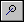
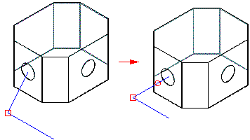

Coaxial commandNote:
To access XpresRoute, click Tools→Environs→XpresRoute.
Creates a coaxial relationship between two path segments or a path segment and a circular or elliptical element on an active part.

How do I
Apply an axis dimension relationshipApply a Tangent relationship to a tube path segment
Apply a parallel relationship to a tube path segment
Apply a connect relationship to a tube path segment
Apply a coaxial relationship to a tube path segment
Look up more details
Applying relationships and dimensions to path segmentsAxis Dimension command
Axis Dimension command bar
Tangent command (XpresRoute environment)
Parallel command
Connect command